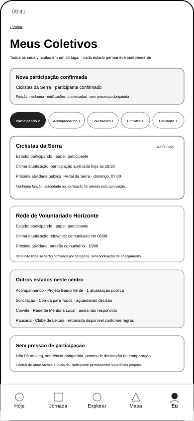

Materialização Controlada de Meus Coletivos e Refinamento da Continuidade Pós-Aprovação¶
1. Finalidade¶
A UXA-091 materializa exclusivamente a referência P0A de GKR-SURF-PER-106 — Meus Coletivos e refina a passagem documental entre o resultado aprovado da solicitação em GKR-SURF-PER-105 e essa nova superfície.
A frente responde:
Depois que uma participação é aprovada, como a Pessoa reconhece o vínculo recém-formado e acompanha seus diferentes vínculos com Coletivos sem transformar pertencimento em ranking, obrigação ou acesso a superfícies ainda ausentes?
A UXA-091 é uma frente de materialização e refinamento, não de validação funcional.
2. Autoridades utilizadas¶
- UXA-056 — contrato funcional de descoberta, participação e
Meus Coletivos; - UXA-059 — programa de wireframes, P0A e estados P0B;
- UXA-066/067 — Solicitação Pendente e resultado aprovado na perspectiva da Pessoa;
- UXA-088/089 — decisão do responsável;
- UXA-090 — validação integrada dos handoffs elegíveis e identificação da dívida de
TRN-108; - registros de superfícies, transições, lacunas e jornadas integradas.
3. Decisão de escopo¶
A UXA-059 define Meus Coletivos como uma das nove referências principais P0A e prescreve móvel primeiro para experiências da Pessoa.
Por isso, esta frente cria um único SVG móvel primário para PER-106.
Não são materializados nesta UXA os estados P0B próprios de:
Meus Coletivossem vínculos;- excesso de volume ou agrupamento avançado;
- falha de sincronização ou baixa conectividade;
- pausa detalhada e retomada;
- histórico expandido;
- Central de Atualizações;
- Início do Participante.
4. Wireframe principal¶

Visualizar o arquivo gráfico vetorial escalável
{kind=link}
O wireframe é estrutural e monocromático. Não define identidade visual final, componente técnico, consulta implementada ou prontidão de produto.
5. Hierarquia funcional¶
A superfície apresenta, em ordem:
- identidade da área
Meus Coletivos; - vínculo recém-confirmado quando aplicável;
- categorias independentes de vínculo;
- participações confirmadas em destaque de leitura;
- resumos de acompanhamento, solicitação, convite e pausa;
- regra explícita de ausência de ranking ou pressão;
- limite de continuidade para superfícies ainda não materializadas.
6. Estados organizados¶
A organização mínima preserva UXA-056:
- Participando;
- Acompanhando;
- Solicitações;
- Convites;
- Participações pausadas;
- histórico somente quando necessário.
Essas categorias não são estágios de uma mesma progressão. Acompanhar não é participar; convite não é vínculo; solicitação não é aprovação; pausa não reduz reputação.
7. Dados mostrados¶
Cada cartão poderá apresentar somente o necessário ao vínculo:
- nome e tipo do Coletivo;
- estado do vínculo;
- papel atual;
- última atualização relevante;
- itens não lidos por categoria, quando houver fonte materializada;
- próxima atividade conhecida;
- pergunta, decisão ou convite pendente, quando legítimo;
- função aceita, quando existir;
- indicação de proteção ou ação quando necessária.
A superfície não utiliza conteúdo protegido da Jornada pessoal, outros dados sensíveis irrelevantes ou informação de terceiros sem finalidade.
8. Proibições explícitas¶
Meus Coletivos não exibirá:
- ranking de dedicação;
- pontuação de engajamento;
- sequência obrigatória de participação;
- comparação entre participantes;
- pressão para aumentar frequência;
- função, autoridade ou notificação atribuída pela simples aprovação;
- publicidade silenciosa dentro dos vínculos.
9. Refinamento do resultado aprovado em PER-105¶
A UXA-091 reformula o SVG existente:
uxa-066-collective-pending-request-approved-mobile.svg
A ação genérica Abrir Coletivo passa a ser:
Ver em Meus Coletivos
O bloco de continuidade passa a declarar que:
- o vínculo confirmado aparece em
Meus Coletivos; - preferências já registradas devem ser preservadas;
Central de AtualizaçõeseInício do Participantepermanecem superfícies próprias;- a nova continuidade ainda exige validação funcional específica.
Essa alteração não reaproveita automaticamente a validação da UXA-067 para a versão reformulada do SVG.
10. Refinamento de GKR-TRN-108¶
A UXA-091 mantém o ID e os endpoints de GKR-TRN-108:
COL-003 — aprovação confirmada pela autoridade
→ resultado aprovado observável em PER-105
→ escolha consciente “Ver em Meus Coletivos”
→ PER-106 — vínculo confirmado visível
O handoff continua parcial porque:
- o novo
PER-106ainda não foi validado funcionalmente; - o estado aprovado reformulado de
PER-105precisa ser revalidado; - a ligação completa ainda não foi reexaminada como conjunto após a materialização.
A UXA-091 não cria um novo ID apenas para representar o resultado intermediário já pertencente à família PER-105.
11. Efeito em GKR-TRN-110¶
GKR-TRN-110 — Meus Coletivos → Central de Atualizações deixa de ter ambos os endpoints ausentes: sua origem passa a estar materializada por UXA-091, enquanto PER-107 continua ausente.
Por isso, a transição passa de ausente para parcial, sem validação e sem simular a Central de Atualizações.
12. Rastreabilidade¶
| Campo | UXA-091 |
|---|---|
| família funcional | continuidade pessoal em Coletivos |
| superfície principal | GKR-SURF-PER-106 |
| canal | móvel |
| entrada principal | vínculo confirmado após resultado aprovado em PER-105 |
| decisão principal | reconhecer e acompanhar vínculos por estado independente |
| saída prevista | PER-107 quando futuramente materializada; retorno a estados existentes conforme contrato |
| transições relacionadas | GKR-TRN-108; GKR-TRN-110 |
| risco dominante | transformar pertencimento em pressão, ranking ou promessa de superfícies ausentes |
| novo ativo | 1 SVG móvel |
| ativo reformulado | 1 SVG aprovado da família PER-105 |
| validação funcional | não executada nesta UXA |
13. Efeito quantitativo proposto¶
Após eventual integração:
- SVGs: 106;
- associações individuais: 106;
- perfis de rastreabilidade: 26;
- SVGs atualmente validados: 94;
- pendentes de validação específica: 12;
- IDs granulares com referência visual: 28 de 40;
- responsabilidades sem SVG dedicado: 11;
- superfícies registradas: 40;
- transições registradas: 37.
Os 12 pendentes passam a ser:
- 10 estados residuais da UXA-055;
uxa-066-collective-pending-request-approved-mobile.svg, reformulado pela UXA-091;uxa-091-my-collectives-mobile.svg, ainda não validado.
14. Efeito sobre maturidade¶
Após eventual integração:
GKR-SURF-PER-106passa denão iniciadoparamaterializado;GKR-TRN-108continuaparcial, agora com destino materializado e continuidade explícita;GKR-TRN-110passa deausenteparaparcialporque apenas sua origem está materializada;GKR-SURF-PER-107continua ausente;GKR-SURF-PER-108continua com reformulação pendente;- jornadas da Pessoa e do Coletivo permanecem
draft.
15. Limites¶
A UXA-091 não:
- valida funcionalmente
PER-106; - revalida o estado aprovado reformulado de
PER-105; - valida
TRN-108ponta a ponta; - materializa
PER-107ouPER-108; - materializa estados P0B adicionais de
Meus Coletivos; - cria novo ID de superfície ou transição;
- define API, banco, sincronização, notificações ou persistência;
- promove a Jornada da Pessoa ou do Coletivo;
- inicia protótipo, teste com pessoas ou Engenharia de Produto;
- inicia UXA-092.
16. Próxima transição possível¶
Após eventual integração e autorização separada:
UXA-092 — Validação Funcional de Meus Coletivos e Revalidação da Continuidade Pós-Aprovação.
A UXA-092 não é iniciada por esta materialização.